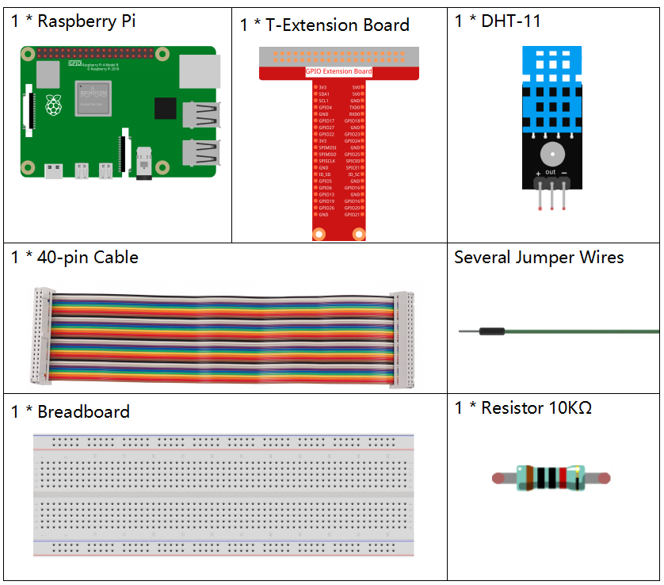
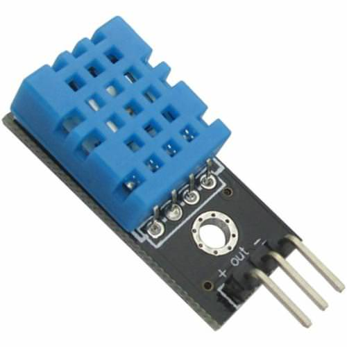

2.2.3 DHT-11¶
Einführung¶
Der digitale Temperatur- und Feuchtigkeitssensor DHT11 ist ein Verbundsensor, der einen kalibrierten digitalen Signalausgang für Temperatur und Luftfeuchtigkeit enthält. Die Technologie einer speziellen Sammlung digitaler Module und die Technologie der Temperatur- und Feuchtigkeitsmessung werden angewendet, um sicherzustellen, dass das Produkt eine hohe Zuverlässigkeit und ausgezeichnete Stabilität aufweist.
Die Sensoren umfassen einen Nasselement-Widerstandssensor und einen NTC-Temperatursensor und sind mit einem Hochleistungs-8-Bit-Mikrocontroller verbunden.
Komponenten¶
Prinzip¶
Der DHT11 ist ein grundlegender, äußerst kostengünstiger digitaler Temperatur- und Feuchtigkeitssensor. Es verwendet einen kapazitiven Feuchtigkeitssensor und einen Thermistor, um die Umgebungsluft zu messen, und spuckt ein digitales Signal auf den Datenstift aus (es werden keine analogen Eingangsstifte benötigt).
Es sind nur drei Pins verfügbar: VCC, GND und DATA. Der Kommunikationsprozess beginnt damit, dass die DATA-Leitung Startsignale an DHT11 sendet, und DHT11 empfängt die Signale und gibt ein Antwortsignal zurück. Dann empfängt der Host das Antwortsignal und beginnt mit dem Empfang von 40-Bit-Feuchtigkeitsdaten (8-Bit-Feuchtigkeits-Ganzzahl + 8-Bit-Feuchtigkeits-Dezimalzahl + 8-Bit-Temperatur-Ganzzahl + 8-Bit-Temperatur-Dezimalzahl + 8-Bit-Prüfsumme). Weitere Informationen finden Sie im DHT11-Datenblatt.
Schematische Darstellung¶

Experimentelle Verfahren¶
Schritt 1: Bauen Sie die Schaltung auf.

Für Benutzer in C-Sprache¶
Schritt 2: Gehen Sie zum Ordner der Kode.
cd /home/pi/davinci-kit-for-raspberry-pi/c/2.2.3/
Schritt 3: Kompilieren Sie die Kode.
gcc 2.2.3_DHT.c -lwiringPi
Schritt 4: Führen Sie die ausführbare Datei aus.
sudo ./a.out
Nachdem die Kode ausgeführt wurde, druckt das Programm die von DHT11 erfasste Temperatur und Luftfeuchtigkeit auf dem Computerbildschirm.
Kode
#include <wiringPi.h>
#include <stdio.h>
#include <stdlib.h>
#include <stdint.h>
#define maxTim 85
#define dhtPin 0
int dht11_dat[5] = {0,0,0,0,0};
void readDht11() {
uint8_t laststate = HIGH;
uint8_t counter = 0;
uint8_t j = 0, i;
float Fah; // fahrenheit
dht11_dat[0] = dht11_dat[1] = dht11_dat[2] = dht11_dat[3] = dht11_dat[4] = 0;
// pull pin down for 18 milliseconds
pinMode(dhtPin, OUTPUT);
digitalWrite(dhtPin, LOW);
delay(18);
// then pull it up for 40 microseconds
digitalWrite(dhtPin, HIGH);
delayMicroseconds(40);
// prepare to read the pin
pinMode(dhtPin, INPUT);
// detect change and read data
for ( i=0; i< maxTim; i++) {
counter = 0;
while (digitalRead(dhtPin) == laststate) {
counter++;
delayMicroseconds(1);
if (counter == 255) {
break;
}
}
laststate = digitalRead(dhtPin);
if (counter == 255) break;
// ignore first 3 transitions
if ((i >= 4) && (i%2 == 0)) {
// shove each bit into the storage bytes
dht11_dat[j/8] <<= 1;
if (counter > 50)
dht11_dat[j/8] |= 1;
j++;
}
}
// check we read 40 bits (8bit x 5 ) + verify checksum in the last byte
// print it out if data is good
if ((j >= 40) &&
(dht11_dat[4] == ((dht11_dat[0] + dht11_dat[1] + dht11_dat[2] + dht11_dat[3]) & 0xFF)) ) {
Fah = dht11_dat[2] * 9. / 5. + 32;
printf("Humidity = %d.%d %% Temperature = %d.%d *C (%.1f *F)\n",
dht11_dat[0], dht11_dat[1], dht11_dat[2], dht11_dat[3], Fah);
}
}
int main (void) {
if(wiringPiSetup() == -1){ //when initialize wiring failed, print messageto screen
printf("setup wiringPi failed !");
return 1;
}
while (1) {
readDht11();
delay(500); // wait 1sec to refresh
}
return 0 ;
}
Kode Erklärung
void readDht11() {
uint8_t laststate = HIGH;
uint8_t counter = 0;
uint8_t j = 0, i;
float Fah; // fahrenheit
dht11_dat[0] = dht11_dat[1] = dht11_dat[2] = dht11_dat[3] = dht11_dat[4] = 0;
// ...
}
Diese Funktion wird verwendet, um die Funktion von DHT11 zu realisieren.
Es kann im Allgemeinen in 3 Teile unterteilt werden:
Bereiten Sie sich darauf vor, den Stift zu lesen:
// pull pin down for 18 milliseconds
pinMode(dhtPin, OUTPUT);
digitalWrite(dhtPin, LOW);
delay(18);
// then pull it up for 40 microseconds
digitalWrite(dhtPin, HIGH);
delayMicroseconds(40);
// prepare to read the pin
pinMode(dhtPin, INPUT);
Sein Kommunikationsfluss wird durch den Arbeitszeitpunkt bestimmt.

Wenn DHT11 startet, sendet die MCU ein Signal mit niedrigem Niveau und hält das Signal dann für 40us auf hohem Niveau. Danach beginnt die Erkennung des Zustands der externen Umgebung.
Daten lesen:
// detect change and read data
for ( i=0; i< maxTim; i++) {
counter = 0;
while (digitalRead(dhtPin) == laststate) {
counter++;
delayMicroseconds(1);
if (counter == 255) {
break;
}
}
laststate = digitalRead(dhtPin);
if (counter == 255) break;
// ignore first 3 transitions
if ((i >= 4) && (i%2 == 0)) {
// shove each bit into the storage bytes
dht11_dat[j/8] <<= 1;
if (counter > 50)
dht11_dat[j/8] |= 1;
j++;
}
}
Die Schleife speichert die erkannten Daten im Array dht11_dat []. DHT11 überträgt Daten von jeweils 40 Bit. Die ersten 16 Bits beziehen sich auf die Luftfeuchtigkeit, die mittleren 16 Bits auf die Temperatur und die letzten acht Bits werden zur Überprüfung verwendet. Das Datenformat ist:
8-Bit-Feuchtigkeits-Integer-Daten + 8-Bit-Feuchtigkeits-Dezimaldaten + 8-Bit-Temperatur-Integer-Daten + 8-Bit-Temperatur-Dezimaldaten + 8-Bit-Prüfbit.
Luftfeuchtigkeit und Temperatur drucken.
// check we read 40 bits (8bit x 5 ) + verify checksum in the last byte
// print it out if data is good
if ((j >= 40) &&
(dht11_dat[4] == ((dht11_dat[0] + dht11_dat[1] + dht11_dat[2] + dht11_dat[3]) & 0xFF)) ) {
Fah = dht11_dat[2] * 9. / 5. + 32;
printf("Humidity = %d.%d %% Temperature = %d.%d *C (%.1f *F)\n",
dht11_dat[0], dht11_dat[1], dht11_dat[2], dht11_dat[3], Fah);
}
Wenn der Datenspeicher bis zu 40 Bit beträgt, überprüfen Sie die Gültigkeit der Daten über das Prüfbit (dht11_dat[4]) und drucken Sie dann Temperatur und Luftfeuchtigkeit aus.
Wenn die empfangenen Daten beispielsweise 00101011 (8-Bit-Wert der Feuchtigkeits-Ganzzahl) 00000000 (8-Bit-Wert der Feuchtigkeits-Dezimalzahl) 00111100 (8-Bit-Wert der Temperatur-Ganzzahl) 00000000 (8-Bit-Wert der Temperatur-Dezimalzahl) 01100111 ( Bit prüfen)
Berechnung:
00101011+00000000+00111100+00000000=01100111.
Das Endergebnis ist gleich mit den Prüfbitdaten, dann sind die empfangenen Daten korrekt:
Luftfeuchtigkeit = 43% ， Temperatur = 60 * C.
Wenn es nicht gleich mit den Prüfbitdaten ist, ist die Datenübertragung nicht normal und die Daten werden erneut empfangen.
Für Python-Sprachbenutzer¶
Schritt 2: Gehen Sie zum Ordner der Kode.
cd /home/pi/davinci-kit-for-raspberry-pi/python/
Schritt 3: Führen Sie die ausführbare Datei aus.
sudo python3 2.2.3_DHT.py
Nachdem die Kode ausgeführt wurde, druckt das Programm die von DHT11 erfasste Temperatur und Luftfeuchtigkeit auf dem Computerbildschirm.
Kode
import RPi.GPIO as GPIO
import time
dhtPin = 17
GPIO.setmode(GPIO.BCM)
MAX_UNCHANGE_COUNT = 100
STATE_INIT_PULL_DOWN = 1
STATE_INIT_PULL_UP = 2
STATE_DATA_FIRST_PULL_DOWN = 3
STATE_DATA_PULL_UP = 4
STATE_DATA_PULL_DOWN = 5
def readDht11():
GPIO.setup(dhtPin, GPIO.OUT)
GPIO.output(dhtPin, GPIO.HIGH)
time.sleep(0.05)
GPIO.output(dhtPin, GPIO.LOW)
time.sleep(0.02)
GPIO.setup(dhtPin, GPIO.IN, GPIO.PUD_UP)
unchanged_count = 0
last = -1
data = []
while True:
current = GPIO.input(dhtPin)
data.append(current)
if last != current:
unchanged_count = 0
last = current
else:
unchanged_count += 1
if unchanged_count > MAX_UNCHANGE_COUNT:
break
state = STATE_INIT_PULL_DOWN
lengths = []
current_length = 0
for current in data:
current_length += 1
if state == STATE_INIT_PULL_DOWN:
if current == GPIO.LOW:
state = STATE_INIT_PULL_UP
else:
continue
if state == STATE_INIT_PULL_UP:
if current == GPIO.HIGH:
state = STATE_DATA_FIRST_PULL_DOWN
else:
continue
if state == STATE_DATA_FIRST_PULL_DOWN:
if current == GPIO.LOW:
state = STATE_DATA_PULL_UP
else:
continue
if state == STATE_DATA_PULL_UP:
if current == GPIO.HIGH:
current_length = 0
state = STATE_DATA_PULL_DOWN
else:
continue
if state == STATE_DATA_PULL_DOWN:
if current == GPIO.LOW:
lengths.append(current_length)
state = STATE_DATA_PULL_UP
else:
continue
if len(lengths) != 40:
#print ("Data not good, skip")
return False
shortest_pull_up = min(lengths)
longest_pull_up = max(lengths)
halfway = (longest_pull_up + shortest_pull_up) / 2
bits = []
the_bytes = []
byte = 0
for length in lengths:
bit = 0
if length > halfway:
bit = 1
bits.append(bit)
#print ("bits: %s, length: %d" % (bits, len(bits)))
for i in range(0, len(bits)):
byte = byte << 1
if (bits[i]):
byte = byte | 1
else:
byte = byte | 0
if ((i + 1) % 8 == 0):
the_bytes.append(byte)
byte = 0
#print (the_bytes)
checksum = (the_bytes[0] + the_bytes[1] + the_bytes[2] + the_bytes[3]) & 0xFF
if the_bytes[4] != checksum:
#print ("Data not good, skip")
return False
return the_bytes[0], the_bytes[2]
def main():
while True:
result = readDht11()
if result:
humidity, temperature = result
print ("humidity: %s %%, Temperature: %s C`" % (humidity, temperature))
time.sleep(1)
def destroy():
GPIO.cleanup()
if __name__ == '__main__':
try:
main()
except KeyboardInterrupt:
destroy()
Kode Erklärung
def readDht11():
GPIO.setup(dhtPin, GPIO.OUT)
GPIO.output(dhtPin, GPIO.HIGH)
time.sleep(0.05)
GPIO.output(dhtPin, GPIO.LOW)
time.sleep(0.02)
GPIO.setup(dhtPin, GPIO.IN, GPIO.PUD_UP)
unchanged_count = 0
last = -1
data = []
#...
Diese Funktion wird verwendet, um die Funktionen von DHT11 zu implementieren. Es speichert die erkannten Daten im Array the_bytes[]. DHT11 überträgt Daten von jeweils 40 Bit. Die ersten 16 Bits beziehen sich auf die Luftfeuchtigkeit, die mittleren 16 Bits auf die Temperatur und die letzten acht Bits werden zur Überprüfung verwendet. Das Datenformat ist:
8bit feuchtigkeits integer daten +8bit feuchtigkeits dezimaldaten +8bit temperatur integer daten + 8bit temperatur dezimaldaten + 8bit prüfbit.
Wenn die Gültigkeit über das Prüfbit erkannt wird, gibt die Funktion zwei Ergebnisse zurück: 1. Fehler; 2. Luftfeuchtigkeit und Temperatur.
checksum = (the_bytes[0] + the_bytes[1] + the_bytes[2] + the_bytes[3]) & 0xFF
if the_bytes[4] != checksum:
#print ("Data not good, skip")
return False
return the_bytes[0], the_bytes[2]
Wenn das Empfangsdatum beispielsweise 00101011 (8-Bit-Wert der Feuchtigkeits-Ganzzahl) 00000000 (8-Bit-Wert der Feuchtigkeits-Dezimalzahl) 00111100 (8-Bit-Wert der Temperatur-Ganzzahl) 00000000 (8-Bit-Wert der Temperatur-Dezimalzahl) 01100111 ( Bit prüfen)
Berechnung:
00101011+00000000+00111100+00000000=01100111.
Wenn das Endergebnis den Prüfbitdaten entspricht, ist die Datenübertragung abnormal: return False.
Wenn das Endergebnis den Prüfbitdaten entspricht, sind die empfangenen Daten korrekt, dann werden die_Bytes [0] und die_Bytes [2] zurückgegeben und „Luftfeuchtigkeit = 43% ， Temperatur = 60 ° C“ ausgegeben.
Phänomen Bild¶